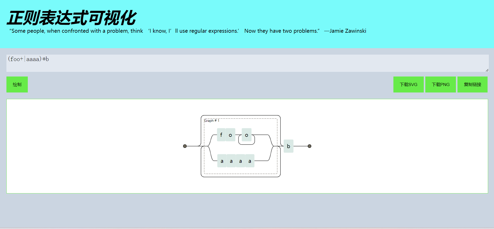
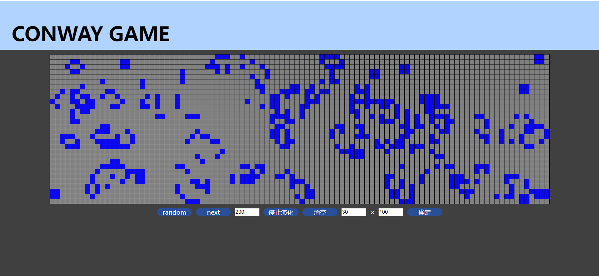
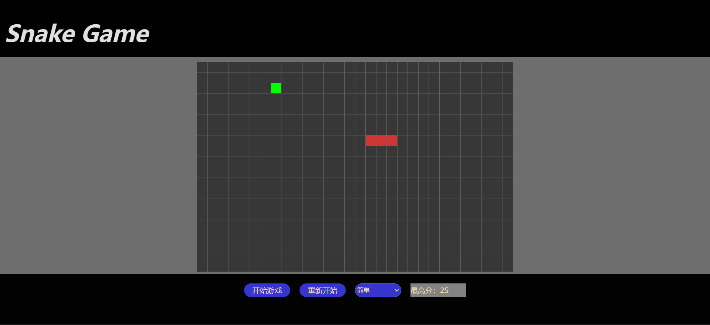
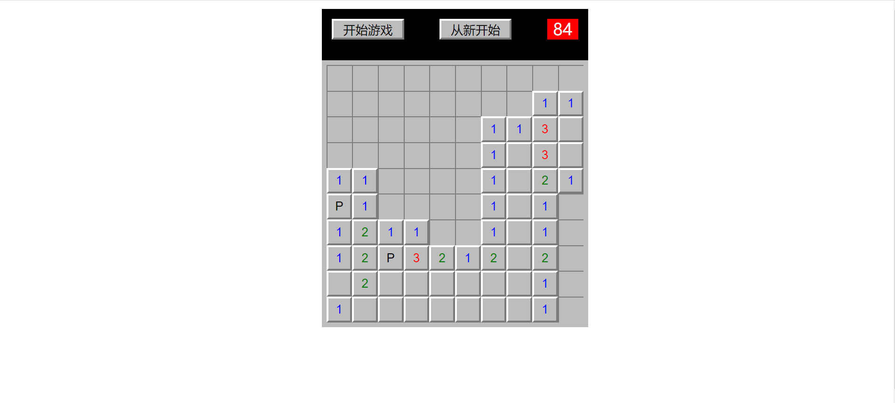

web前端工程师
基本信息
姓名： 李春武 年龄： 21岁
性别： 男 学历： 专科
联系电话： 17630974149 邮箱： lichunwu2002@outlok.com
专业技能
- 掌握 JavaScript、HTML、CSS，熟悉 W3C 标准、ES6 规范；
- 熟悉 Sass、Less 等 CSS 预编译工具；
- 熟练使用 Vue 全家桶 Vuex、Vue Router，Pinia；
- 熟悉前端组件化，模块化开发，了解webpack和vit打包工具
- 熟悉前后端开发模式，使用 Axios，Ajax 等数据请求工具；
- 熟练掌握主流的 UI 框架（Antd、ElementUI、Tailwind CSS等）；
- 了解 React，以及 Redux、React-router；
- 了解 TypeScript，提高代码的可维护性；
- 了解 Node.js后端开发；
- 了解Git版本控制工具，npm，pnpm包管理控制工具；
- 了解网络基本原理，对 HTTP 协议与 TCP/IP 协议有一定的了解；
- 了解微信小程序开发流程；
教育背景
2020.09-2023.07 郑州理工职业学院 软件开发
项目经验
校园投票
1. 项目介绍：
对投票进行统计，根据用户身份，实现发布投票，投票截止时间，删除，更改，查询等功能
2. 选用技术
- 使用vit脚手架快速搭建项目
- 使用Vue Router 实现页面的跳转
- 使用Pinia实现全局状态管理
- 使用node.js 模块获取 get/post 请求后端数据返回到前端页面
- 使用 element-plus 组件实现页面功能
- 使用 Tailwind CSS 对页面UI进行美化
个人项目
-
正则铁路，图根据给出的正则表达式画出相对应的正则铁路图。

https://lichwuwu.github.io/personally/reg-railway.html -
康威生命游戏，根据康威生命游戏规则使用原生dom画出页面

https://lichwuwu.github.io/personally/Conway_Game.html -
贪吃蛇游戏，使用原生dom画出贪吃蛇游戏

https://lichwuwu.github.io/personally/Snakes.html -
扫雷游戏，使用原生dom画出扫雷游戏

https://lichwuwu.github.io/personally/minesWeeper_game.html